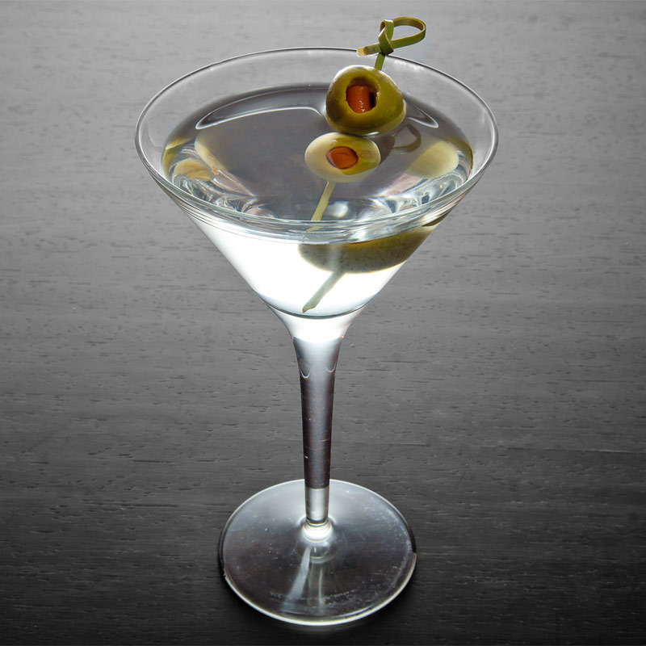

- Jin tonic
- Long Island iced tea
- Martini
Martini 만드는 법
Martini is a cocktail made with gin and vermouth, and garnished with an olive or a lemon twist. Over the years, the martini has become one of the best-known mixed alcoholic beverages.
How to make Martini
1. Prepare Jin 2 oz, Dry vermous 1/3 oz, olive
2. Put Jin and dry vermous into glass with ice
3. Stir all ingredients
4. Put olive on to glass
